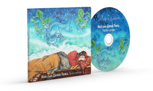

Мы искренне верим, что буддийская культура несет в себе огромный потенциал, способствующий достижению, как
каждым отдельно взятым человеком, так и обществом в целом, ясности и спокойствия ума, высокого уровня эмпатии,
более здорового, устойчивого духа и тела.

| О Фонде
В 2020 году мы создали Благотворительный фонд «Океан Мудрости» для сохранения и развития буддийской культуры.
Организовываем и поддерживаем инновационные проекты, которые раскрывают прикладное значение, глубину и
невероятную актуальность буддийской культуры в условиях современного мира.
Практическое применение духовных, нравственных и этических буддийских ценностей, их репрезентацию
в современном формате с помощью разнообразных медиа — это основные наши направления и цели. Мы открыты
для сотрудничества и новых идей.
| Анатолий Джуджиев, исполнительный директор Фонда

К 80-летию духовного лидера буддистов подготовлена удивительная аудио-версия
знаменитого автобиографического произведения Его Святейшества Далай-ламы «Свобода в изгнании».
Голосом Его Святейшества Далай-ламы стал выдающийся актер российского театра и
кино Валентин Иосифович Гафт.
Валентин Гафт, Народный артист РСФСР,
вспоминает:
Я восхищен человеком, от лица которого говорил. Я старался приблизиться к нему,
хотя приблизится к нему, думаю, невозможно, но даже прикоснуться к этой личности было для меня большой
честью.

| Наши проекты
Строительство Ретритного Центра
Ретритный центр «Тантрического монастыря Владыки Цонкапы» (г. Городовиковск, Республика Калмыкия) строится по
инициативе первого настоятеля досточтимого Тхуптен Тхинлая.
Двери центра будут открыты для практикующих буддистов, решивших провести интенсивный ретрит по предварительным
подготовительным практикам «Нёдро», «Ньюнгнэ», а также проведения затворничества приближения «Лерунг»,
под руководством нынешего настоятеля монастыря досточтимого Кесанг Ямхе.
Строительство находится на завершающей стадии, идут внутрение отделочные работы.


В основе аудиокниги автобиография матери Его Святейшества Далай-ламы Дики Церинг
«Мой сын Далай-лама. Рассказ матери».
От автора текст читает Народная артистка СССР, театральный режиссер Галина
Борисовна Волчек.
Галина Борисовна Волчек — мужественный человек. Ей было трудно передвигаться и
говорить, и она попросила осуществить запись у нее дома. Мы приезжали к ней на дачу с аппаратурой
и записывали материал по четыре часа. Закончили работу, она отказалась от авторского гонорара, сказав:
“Пусть это будет моим подношением калмыцкому народу и Его Святейшеству Далай-ламе”
Анатолий Джуджиев,
исполнительный директор Фонда

| Наши проекты
Аудиокниги

Сон, сновидения и смерть
Исследование структуры сознания
Книга об исторически значимом диалоге между ведущими западными учеными
и Далай-ламой
XIV. Совместная конференция посвящалась трем ключевым состояниям — сну, сновидениям и смерти, которые были
названы известным неврологом Франциско Дж. Варела "теневыми зонами эго"...

Свобода в изгнании
Автобиография Далай-ламы XIV
К 80-летию Его Святейшества Далай-ламы подготовлена удивительная аудио-версия его
знаменитого автобиографического произведения «Свобода в изгнании». Голосом Его Святейшества Далай-ламы
стал
выдающийся актер российского театра и кино Валентин Иосифович Гафт.

“Иткл” — евәлин ном
Устная передача (лунг) и комментарий на калмыцком языке Шальван Гегәна XIV
В последние десятилетия в нашей республике произошли события, благодаря которым
калмыцкий народ вновь обрел веру в себя и будущее. Это посещение калмыцкой земли Далай-ламой XIV, а также
визиты в Калмыкию Главы буддистов СУАР КНР Шальван Гегәна XIV, во время которых калмыки впервые после
забвения и многих лет репрессий услышали высокое учение Будды на родном языке.
| Наши проекты
Электронные книги

Мой сын Далай Лама
Исследование структуры сознания
Книга об исторически значимом диалоге между ведущими западными учеными и
Далай-ламой XIV. Совместная конференция посвящалась трем ключевым состояниям — сну, сновидениям и смерти,
которые были названы известным неврологом Франциско Дж. Варелой "теневыми зонами эго". В конференции
участвовали такие известные ученые, как философ Чарльз Тейлор, психоаналитик Джойс Мак-Дугал, психолог
Джейн Гакенбах, культуролог Джоан Халифакс ...

Сутра сердца
Учения Далай Ламы XIV о праджняпарамите
В настоящей книге приведен полный перевод текста Сутры сердца Праджня-парамиты и
подробный комментарий на него, данный Далай-ламой XIV во время учений в 2001 году.
Сутра сердца – это представленное в краткой, тезисной форме учение о глубокой мудрости, опирающейся на
прозрение пустотности «внешних» явлений и индивидуальной самости. Его Святейшество Далай-лама объясняет,
как избежать неправильного понимания этих ...
Моя страна и мой народ
Воспоминания Его Святейшества Далай Ламы XIV
Книга, которую Вы держите в руках, была продиктована Его Святейшеством Далай Ламой
вскоре после бегства в 1959 году из оккупированного китайцами Тибета. Почти сразу её перевели на десятки
языков, и этот по-человечески простой рассказ лидера древнейшей мировой религии и, одновременно, правителя
самой таинственной страны нашей планеты о своей жизни и трагической судьбе тибетского народа уже стал
классикой ...